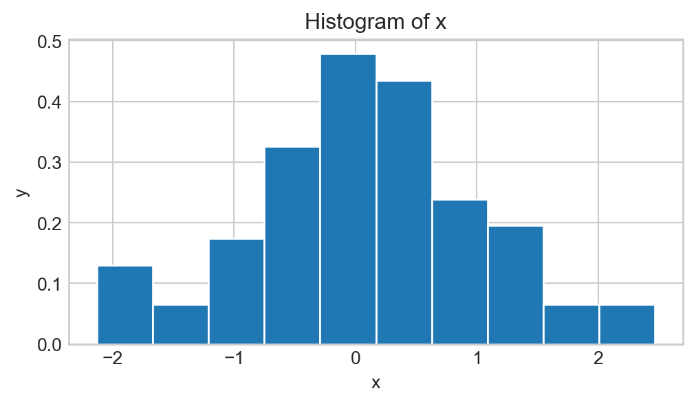
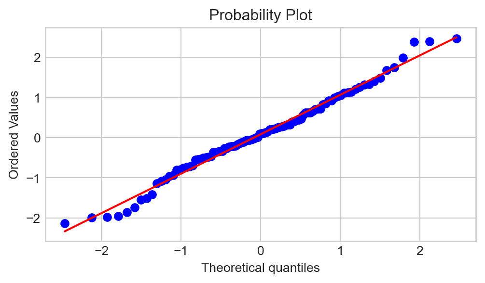
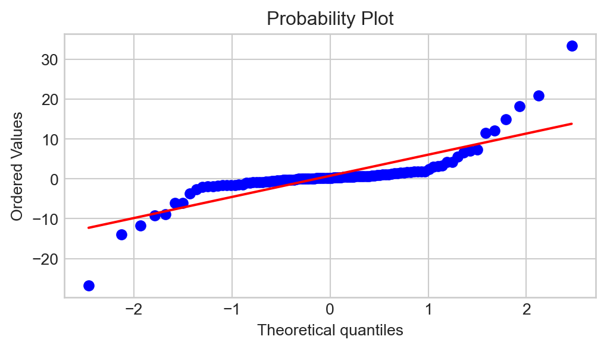

scipy.stats.norm.ppf(p, m, s)Percentiles
As we have seen in lecture, confidence intervals for a population parameter \(\theta\) take the form \[ \widehat{\theta} \pm c \cdot \mathrm{s.e.} \] where \(\mathrm{s.e.}\) denotes the standard error (i.e. standard deviation) of the point estimator \(\widehat{\Theta}\), and \(c\) is an appropriately-selected percentile from the distribution of \(\widehat{\Theta}\).
Up until now, we have primarily been finding the constant \(c\) using the various tables at our disposal (i.e. the normal table, and the \(t\) table). Though being able to read these tables is a useful skill (and a skill that is potentially testable on quizzes and exams…), using computers to compute these percentiles can greatly increase efficiency.
On Homework 6 we were exposed to the function scipy.stats.norm.ppf() to compute the percentiles of the normal distribution. Recall that the syntax
computes the pth percentile of the \(\mathcal{N}\)(m, s) distribution. There are analagous functions that allow us to compute percentiles of other distributions; for example, scipy.stats.t.ppf() can be used to find the percentiles of the \(t\) distribution.
Task 1
Find the 10th percentile of the \(t_{31}\) distribution and check that this value agrees with the value provided in the \(t-\)table appearing on the course website. (Remember that the percentile you find will need to be scaled by \(-1\) to match the value provided in the table.)
Find the 0.5th percentile of the \(t_{11}\) distribution and check that this value agrees with the value provided in the \(t-\)table appearing on the course website. (Remember that the percentile you find will need to be scaled by \(-1\) to match the value provided in the table.)
Default Values in a Function
By the way, it should be noted that some arguments in certain functions have what are known as default values. For example, the code scipy.stats.norm.ppf(0.025) will run even though we haven’t explicitly specified an m and s value. If we consult the help file for the scipy.stats.norm.ppf() function, we will see that the arguments m and s are assigned default values of 0 and 1 respectively. What this means is that, we don’t explicitly specify a value for m or s, Python will automatically assign them a value of 0 and 1, respectively.
import scipy.stats as sps
sps.norm.ppf(0.025)-1.9599639845400545
Task 2
What are the arguments that the function
sps.t.ppf()(assuming we have importedscipy.statsassps) takes?How many of the arguments take default values? What are the default values?
When defining a function ourselves, we can also specify default values for some (or even all) of the arguments! The syntax we use is:
def <function name>(<arg1> = <default1>, <arg2> = <default2>, ...):
<body of function>For example,
def f(x, y = 1):
return x + y
f(3)4
Task 3
Write a function called dice_roll() that takes in two inputs:
num_sides(with a default value of 6)num_rolls(with a default value of 1)
that simulates rolling a num_sides-sided die num_rolls times. Test that your function behaves as follows:
dice_roll(12, 5) # rolling a 12-sided die 5 times[3, 2, 0, 3, 6]dice_roll(12) # rolling a 12-sided die once[1]dice_roll() # rolling a 6-sided die once[4]Testing Distributional Fits
If you recall, one of the first questions we need to ask ourselves when constructing a confidence interval for a population mean is whether or not the underlying distribution is normal. This begs the question: how can we tell if something follows a normal distribution?
One idea might be to look at a histogram. For example, given a list of numbers x sampled from an unknown distribution, we could simply generate a histogram of x and see if it is bell-shaped:

This is, however, not a good idea in practice, as there are many distributions that have bell-shaped density curves but are not normal; for example, \(t-\)distribution. In other words, even though the histogram above is bell-shaped, how do we know it came from a normal distribution and not a \(t-\)distribution? The answer is- we don’t!
Instead, statisticians and datascientists use QQ-plots to assess distributional fits. The general idea of a QQ-plot is as follows: if x truly was sampled from a normal distribution, its sample percentiles should correspond closely with the percentiles of the standard normal distribution. As such, a QQ-plot plots the sample percentiles (sometimes called quantiles, hence the name QQ-plot as opposed to PP-plot) against the standard normal percentiles.
There are several different functions in several different Python modules which can be used to construct QQ-plots; the one we will use is the probplot() function from the scipy.stats package:

plt.figure(figsize=(6, 3))
sps.probplot(x, plot = plt);Why is Python displaying a diagonal line? Well, let’s think about what our QQ-plot would look like if x were actually sampled from a normal distribution. Again, all sample quantiles of x would be pretty close to the corresponding quantiles of the standard normal distribution; i.e. the QQ-plot would look pretty close to a diagonal line!
Said differently: significant deviations from the diagonal line in a QQ-plot indicate non-normality. The plot above does not have too many significant deviations from the line, meaning we would say that x is likely sampled from a normal distribution. As an example of a QQ-plot that indicates non-normality:

Note
When using a QQ-plot to assess normality, always check the behavior in the tails (i.e. left- and right-extremes of the plot), as this is often where non-normality becomes the clearest.
Task 4
Generate a series of 100 draws from the \(\mathcal{N}(3, \ 2.1)\) distribution and store these in a variable called x. Generate another series of 100 draws, this time from the \(t_{2}\) distribution, and store these in a variable called y. Then, generate QQ-plots of both x and y, and comment on how you would be able to tell that x was normally distributed whereas y was not, even if you hadn’t been told explicitly which distributions x and y came from. Hint: you may need to look up the help file on scipy.stats.probplot() when making the QQ-plot for y.